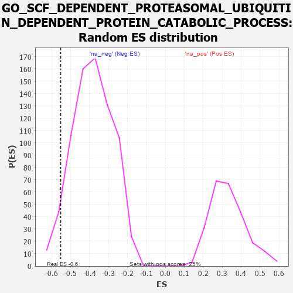

| | | Dataset | 7d |
| Phenotype | NoPhenotypeAvailable |
| Upregulated in class | na_neg |
| GeneSet | GO_SCF_DEPENDENT_PROTEASOMAL_UBIQUITIN_DEPENDENT_PROTEIN_CATABOLIC_PROCESS |
| Enrichment Score (ES) | -0.5528541 |
| Normalized Enrichment Score (NES) | -1.4417877 |
| Nominal p-value | 0.053262316 |
| FDR q-value | 0.25861743 |
| FWER p-Value | 1.0 |
Table: GSEA Results Summary
 Fig 1: Enrichment plot: GO_SCF_DEPENDENT_PROTEASOMAL_UBIQUITIN_DEPENDENT_PROTEIN_CATABOLIC_PROCESS
Fig 1: Enrichment plot: GO_SCF_DEPENDENT_PROTEASOMAL_UBIQUITIN_DEPENDENT_PROTEIN_CATABOLIC_PROCESS
Profile of the Running ES Score & Positions of GeneSet Members on the Rank Ordered List
| PROBE | GENE SYMBOL | GENE_TITLE | RANK IN GENE LIST | RANK METRIC SCORE | RUNNING ES | CORE ENRICHMENT | | 1 | PSMD7 | | | 1152 | 0.454 | -0.1159 | No |
| 2 | PSMD2 | | | 1181 | 0.450 | -0.0906 | No |
| 3 | RBX1 | | | 1445 | 0.401 | -0.0980 | No |
| 4 | PSMD4 | | | 1811 | 0.335 | -0.1224 | No |
| 5 | PSMD6 | | | 1858 | 0.326 | -0.1073 | No |
| 6 | CUL5 | | | 1947 | 0.314 | -0.0983 | No |
| 7 | PSME4 | | | 2143 | 0.285 | -0.1045 | No |
| 8 | PSMF1 | | | 2251 | 0.268 | -0.1008 | No |
| 9 | PSMD5 | | | 2560 | 0.218 | -0.1256 | No |
| 10 | CUL1 | | | 2735 | 0.193 | -0.1351 | No |
| 11 | CUL2 | | | 2882 | 0.169 | -0.1427 | No |
| 12 | CUL4A | | | 3097 | 0.137 | -0.1608 | No |
| 13 | PSMD9 | | | 3179 | 0.125 | -0.1630 | No |
| 14 | FBXL4 | | | 3659 | 0.049 | -0.2201 | No |
| 15 | SKP1 | | | 3663 | 0.049 | -0.2174 | No |
| 16 | PSME3 | | | 4280 | -0.056 | -0.2913 | No |
| 17 | FBXW7 | | | 4816 | -0.161 | -0.3483 | No |
| 18 | PSMD1 | | | 5674 | -0.367 | -0.4326 | No |
| 19 | WWTR1 | | | 6631 | -0.729 | -0.5062 | Yes |
| 20 | FBXL2 | | | 6956 | -0.911 | -0.4885 | Yes |
| 21 | FBXL5 | | | 7046 | -0.965 | -0.4379 | Yes |
| 22 | AMN1 | | | 7352 | -1.222 | -0.3979 | Yes |
| 23 | FBXL7 | | | 7380 | -1.245 | -0.3215 | Yes |
| 24 | PSMD3 | | | 7907 | -2.887 | -0.2027 | Yes |
| 25 | PSMD8 | | | 7931 | -3.286 | 0.0050 | Yes |
Table: GSEA details [plain text format]

Fig 2: GO_SCF_DEPENDENT_PROTEASOMAL_UBIQUITIN_DEPENDENT_PROTEIN_CATABOLIC_PROCESS: Random ES distribution
Gene set null distribution of ES for GO_SCF_DEPENDENT_PROTEASOMAL_UBIQUITIN_DEPENDENT_PROTEIN_CATABOLIC_PROCESS